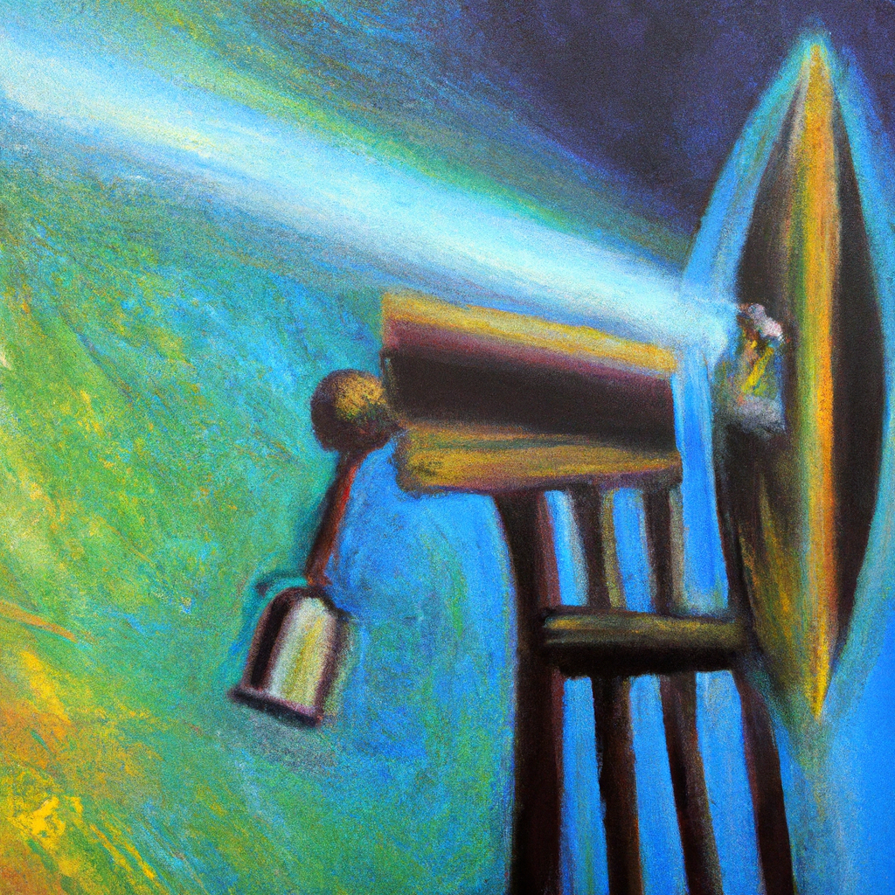

The future of PR measurement
As PR professionals, we are tasked with building relationships between organizations and their audiences. To do this effectively, we must understand the impact of our work and measure the success of our campaigns. Traditionally, this was done through a variety of qualitative and quantitative methods. However, with the rise of artificial intelligence (AI) and machine learning, the way we measure PR success is changing.
AI and machine learning can be used to analyze large amounts of data and provide insights into the effectiveness of campaigns. For example, AI can be used to track media mentions, analyze sentiment, and measure the reach and engagement of a campaign. In the future, AI may even be able to predict which campaigns will be successful and how they can be optimized for maximum impact.
The use of AI in PR measurement is still in its early stages, but it has the potential to revolutionize the way we measure success. By using these technologies, PR professionals can gain a deeper understanding of their audiences and tailor their campaigns to get the best results. It’s an exciting time for PR, and I’m looking forward to seeing where AI and machine learning take us in the future.